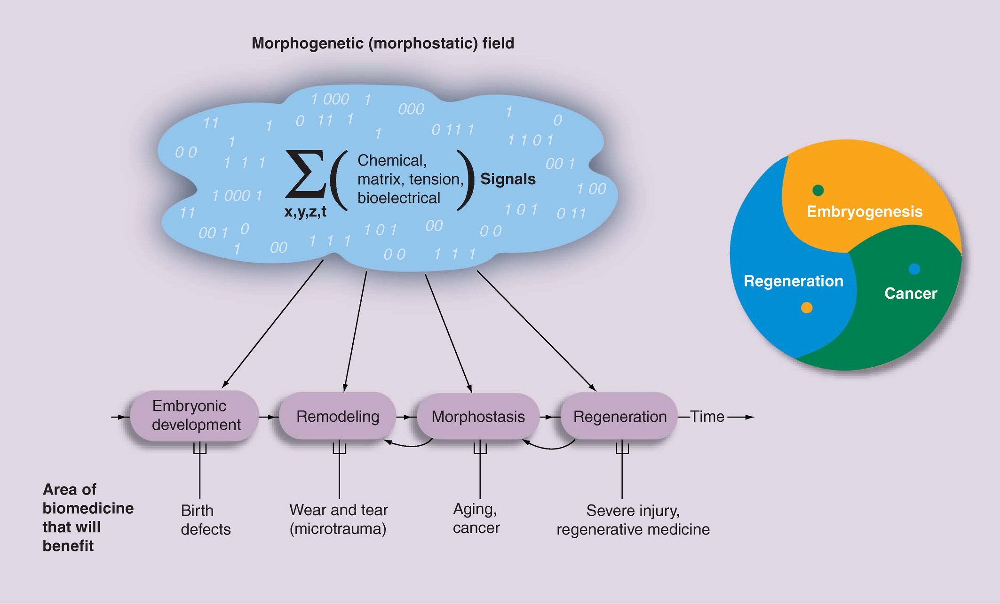

“the placement of all components in the right arrangement is crucial and cannot be micromanaged by direct bioengineering”
“If a tumor is induced on the limb of a salamander and the limb is amputated through the tumor, the remaining cancer tissue becomes part of the newly regenerating limb.”
“two-headed planaria produced by a 48-h inhibition of gap junctional communication during regeneration will subsequently continue to regenerate as double-headed forms”
“Incorporation of light-emitting elements into scaffolds and bioreactors will enable unprecedented levels of control over cell fate and growth rates for bioengineered constructs in vitro and for regenerative sleeves used for organ regeneration in vivo.”
Quotes
“Moreover, the highly competent decision-making of cellular collectives in anatomical morphospace reveals a fascinating commonality between problems of cognition (mind) and problems of body (morphogenesis).”1
“Birth defects, traumatic injury, cancer and degenerative disease would all be solved if we had a mature science of making predictions and deriving rational interventions into the morphogenetic process.”2
“Birth defects, traumatic injury, aging and cancer are addressed by distinct disciplines, journals and funding bodies. This article discusses an unconventional perspective: morphogenetic fields (information-bearing global patterns in chemicoelectrical properties that guide growth and form) as a profound unifying concept central to biology and medicine.”3
” - An information-centered understanding of the morphogenetic field as a fundamental, high-level regulator of shape along the regenerative repair–cancer continuum; - An understanding of nonlocal (long range, perhaps neurally mediated) instructive patterning signals; - The hypothesis of ‘target morphology’, having important implications for where and how shape-modulating signals should be applied for interventions; - Incorporation of bioelectrical controls of patterning, which involves development of physiomic datasets and technologies to understand how patterning information is stored in dynamic physiological networks (beyond protein and gene regulatory network profiling); - Application of techniques from computer science to develop algorithmic (constructivist) models – a bioinformatics of shape that will drastically increase the level of insight drawn from high-resolution genetic and functional data. “4
“The restoration of shape is a central goal of regenerative medicine – rebuilding a complex structure such as a hand or eye requires more than stem cells driven towards individual tissues – the placement of all components in the right arrangement is crucial and cannot be micromanaged by direct bioengineering”5
“Regeneration, development and cancer can all be seen as different aspects of the same fundamental question: how is the shape of complex large-scale structures specified, and what signals can be capitalized upon to integrate individual cell behaviors into a higher order pattern desired in biomedical repair? This is a top-down view, focused on information flow (what do cells need to know in order to build or repair a structure? In what form and by what mechanism is the final morphology of any given organ or bodyplan encoded?) and distinct from the more popular bottom-up molecularly focused approach (what does protein X do?).”6
“If a tumor is induced on the limb of a salamander and the limb is amputated through the tumor, the remaining cancer tissue becomes part of the newly regenerating limb.”7
“While developmental biologists are some- what more inclined to try to explain and con- trol higher order (systems-level) properties such as intercellular coordinate systems (positional information) and organ size determination, regenerative medicine and cancer biology are currently focused on the cell-level mechanisms of proliferation control, metastasis and differentia- tion. High-impact advances require understand- ing of how organisms exert patterning control on a large scale and the synthesis of molecular genetic data into information-based models of morphogenesis.”8
“Two completely different structures are formed by cells that, until the cut occurred, were sharing all aspects of the local environment. Thus, still poorly understood long-range signals allow the wound cells to know where they are located, which direction the wound is facing and what other structures are still present in the fragment and do not need to be replaced.”9
“One interesting source and conduit for long-range patterning information is the CNS. Denervated amphibian limbs do not regenerate, while injury to specific parts of the brain or spinal cord results in abnormal patterning of regenerated appendages. The integrity of CNS connections near injured regions of planaria determines what structures are regenerated, and denervation of body regions causes disorganization of already existing structures and promotes tumorigenesis, suggesting a role for the nervous system in morphostasis and de novo morphogenesis. Important advances in regenerative control are likely to come from understanding the contribution of the brain and nervous system as instructive patterning cues, not only as permissive trophic signals.”10
“Similarly, recent molecular work on the role of gap junctional communication in planarian regeneration revealed that a transiently induced change in the physiological (not genetic) state of cells can permanently reset the target morphology: two-headed planaria produced by a 48-h inhibition of gap junctional communication during regeneration will subsequently continue to regenerate as double-headed forms through multiple rounds of regeneration with no more exposure to gap junction blockers. Thus, the target morphology can be permanently changed, and is stored at least partially in the dynamic patterns of direct small molecule exchange among cells. These fundamental results highlight a tremendous and now realistic opportunity for the field to dissect the mechanisms of morphogenetic memory.”11
“What physiological processes could encode pattern, and thus be capitalized upon for restorative therapies? Steady-state endogenous ion currents, voltage gradients and electric fields are produced by ion channel and pump proteins, and control orientation and positioning of migratory cell types, differentiation of muscle and nerve progenitor cells into mature tissues, and proliferation rates of neoplastic cells [38–42]. Bioelectrical activity is important for determination of fate and other key properties in a stem and progenitor cells [43–46], including adult human mesenchymal stem cell [47,48] and induced pluripotent stem cells [49]. More generally, low voltage gradients demarcate stem, cancer and embryonic cells, while hyperpolarized potentials belong to mature, highly differentiated somatic cells [50]. Using fluorescent voltage-reporter dyes and targeted misexpression of well-characterized ion transporters [51–53], the instructive signaling roles of transmembrane voltage gradients have been linked with downstream molecular genetic effector pathways such as redistribution of signaling molecules, integrin pathways, phosphatase cascades and chromatin modification [42,54].”[morphogenetic-fields]
“These fundamental results highlight a tremendous and now realistic opportunity for the field to dissect the mechanisms of morphogenetic memory.”12
“What physiological processes could encode pattern, and thus be capitalized upon for restorative therapies? Steady-state endogenous ion currents, voltage gradients and electric fields are produced by ion channel and pump proteins, and control orientation and positioning of migratory cell types, differentiation of muscle and nerve progenitor cells into mature tissues, and proliferation rates of neoplastic cells [38–42]. Bioelectrical activity is important for determination of fate and other key properties in a stem and progenitor cells [43–46], including adult human mesenchymal stem cell [47,48] and induced pluripotent stem cells [49].”13
“The exciting recent developments of optogenetics (control of ion channels by means of light signals) [67] must be extended beyond ultra-fast spike generation in nerves and muscles to the control of long-term voltage properties of nonexciteable cells. Incorporation of light-emitting elements into scaffolds and bioreactors will enable unprecedented levels of control over cell fate and growth rates for bioengineered constructs in vitro[68] and for regenerative sleeves used for organ regeneration in vivo[69].”14
“True control over biological patterning will involve the development of computerized tools that enable algorithmic or generative models of patterning [78–81] (showing, at each step, how cells make the decisions that guide their behavior), and help biologists to infer stable candidate models from complex molecular and functional datasets.”15
“Creation and maintenance of correct patterning of tissues and organs is the cornerstone of health; many biomedical interventions ultimately entail an attempt to restore the body’s ‘goal state’ with respect to shape. This means we must learn to understand the key aspects of the morphogenetic field that controls pattern formation, including its biochemical [82], bioelectrical [83,84], physical [78] and planar polarity [85] aspects, as well as develop technology to facilitate the organism’s use of this information during repair. Fortunately, theoretical tools and molecularly tractable model systems are now within reach.
Heroic piecemeal interventions that address individual failing systems to extend the last years of a body are fundamentally a strategy of patching up a sinking ship. The cost of increasingly more complex interventions required for each success (increasing the number and age of individuals in need of the next patch) is a positive feedback loop that no society can afford in the long term. Regenerative medicine promises a break from this cycle, by activating programs for continuous organ repair that already exist within the host. By learning the most profound tricks of existing model species (which clearly show that perfect regeneration throughout the adult lifespan is possible for complex animals), we will ultimately revolutionize the concept of health and treatment of disease.”16
“Breakthroughs in biomedicine and synthetic bioengineering require predictive, rational control over anatomical structure and function. Recent successes in manipulating cellular and molecular hardware have not been matched by progress in understanding the patterning software implemented during embryogenesis and regeneration. A fundamental capability gap is driving desired changes in growth and form to address birth defects and traumatic injury. Here we review new tools, results, and conceptual advances in an exciting emerging field: endogenous non-neural bioelectric signaling, which enables cellular collectives to make global decisions and implement large-scale pattern homeostasis. Spatially distributed electric circuits regulate gene expression, organ morphogenesis, and body-wide axial patterning. Developmental bioelectricity facilitates the interface to organ-level modular control points that direct patterning in vivo. Cracking the bioelectric code will enable transformative progress in bioengineering and regenerative medicine.”17
Images
